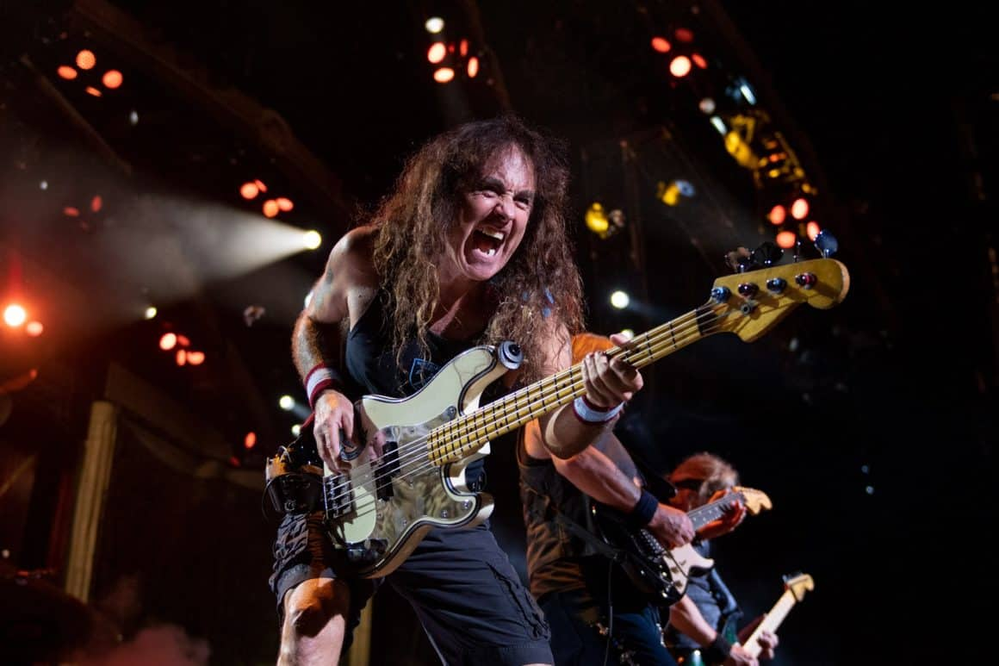

Historia do Heavy Metal
Considerado um dos filhos mais temperamentais do rock and roll, o heavy metal superou todos os modismos e se consolidou nas últimas décadas como um dos gêneros musicais mais amados e reverenciados do mundo. Mas afinal, o que é e como surgiu o heavy metal?
As pessoas gostam de categorizar a música que ouvem. Elas podem separar as bandas e artistas de que gostam em diferentes gêneros. Mas como qualquer pessoa que já ouviu várias bandas diferentes sabe, esse muitas vezes é um exercício sem muito sentido. A música é uma forma de arte em constante evolução e nem sempre é possível encaixar diferentes bandas e artistas em gêneros bem definidos.
A própria linguagem possui limitações para expressar a realidade e nunca será 100% precisa. Como ensinava o filósofo grego Heráclito há 500 anos, a realidade é fluida, e tudo está em constante transformação; quando falamos de um rio, por exemplo, talvez já não seja mais o mesmo de antes (a água passou, a margem e as ondulações na superfície mudaram etc). Daí a necessidade da metafísica para definir a realidade.
A essência do heavy metal
Não obstante, os rótulos podem nos ser úteis para ajudar a delimitar o discurso sobre os diferentes estilos e sonoridades de artistas, apesar de sua utilização não ser uma “ciência”, por assim dizer. Quando falamos de reggae ou heavy metal, estamos nos referindo a algo parecido com o som de Bob Marley ou do Iron Maiden, respectivamente. Neste caso, os rótulos foram bastante úteis, não é?
O que é heavy metal?
O termo “heavy metal” refere-se a qualquer um dos vários gêneros de música pesada relacionados que se desenvolveram no final dos anos 60 e no início dos anos 70, originários do blues rock, do rock psicodélico e do acid rock. Quando usado hoje, o termo geralmente descreve apenas um certo subgênero de heavy metal, geralmente speed metal ou power metal.
Heavy metal é por sua vez um subgênero do rock que se desenvolveu na década de 60 e mais tarde ganhou força como uma reação contra a música mainstream da década de 80. Ele combina elementos de rock and roll (em canções de metal típicas, o ritmo principal é fornecido por uma ou mais guitarras) com elementos de hard rock (por exemplo, uma forte ênfase no baixo).
O gênero musical surgiu no final dos anos 60 e início dos anos 70com artistas que hoje são tidos como hard rock, especialmente Black Sabbath, Led Zeppelin, Jimi Hendrix e Deep Purple, principalmente, que eram todos classificados como heavy metal até o final da década de 80. Esses artistas foram influenciados por pioneiros de décadas anteriores que precisam ser mencionados.
Os grupos de rock and roll que influenciaram o heavy metal em seus estágios iniciais desempenharam um papel importante no desenvolvimento do gênero. Surgido na década de 50, o rock and roll evoluiu do blues, do jazz e da música country, e americanos como Chuck Berry e Little Richards popularizaram o estilo. Na década seguinte, britânicos como Beatles e Rolling Stones acrescentaram mais peso ao som.
Influenciados pelos citados pioneiros, bandas posteriores que tocavam basicamente blues rock, como o Cream, foram adicionando mais e mais distorção dos amplificadores ao seu som, tornando-o cada vez mais sujo e por vezes até sombrio, como foram os casos do Led Zeppelin e do Black Sabbath, que achou melhor encaixar letras inspiradas em filmes de terror naquele som ineditamente macabro.
Por sua vez, Jimi Hendrix quis ir além do efeito distorcido do amplificador e passou a comprar qualquer protótipo de pedal de efeito para criar músicas com sonoridades cada vez mais elaboradas, fato que influenciou por tabela grandemente os outros músicos que iam assistir aos shows do virtuoso guitarrista e ficavam chocados, como foi o caso de Pete Townshend, líder do The Who.
Pedais de efeito, heavy metal e hard rock
De fato, a evolução do som de todo o rock seria posteriormente fortemente influenciada pelo desenvolvimento dos pedais de efeito, especialmente por causa do pioneirismo do genial Jimi Hendrix. Bandas do pós-punk importantes dos anos 80, como por exemplo, U2, The Cure, Echo & the Bunnymen e The Cult (no início), calcariam seus sons em riffs com Distortion, Delay, Flanger, Cry Bay etc.
Os ótimos e coloridos pedais da Boss, especialmente, virariam uma febre nos anos 80; todo adolescente guitarrista pedia um no Natal ou no aniversário! Aconteceu que os pedais de distorção foram sendo desenvolvidos até que lançaram um preto batizado “Heavy Metal” (ou “HM-2”). A ideia era ligar aquilo somente nos solos, mas…veja um vídeo comparando o “Distortion” (ou “DS-1”) e o “Heavy Metal”:
No entanto, a molecada começou a fazer guitarra base com aquele brinquedo ultra barulhento e não mais com distorção de amplificador, Distortion ou Overdrive, como faziam anteriormente Black Sabbath, Ozzy, Led Zeppelin, AC/DC etc, então tidas como bandas de heavy metal.
A partir deste ponto, surgem o speed e o thrash metal com uma pá de jovens utilizando os populares e até hoje eficientes pedais Boss pretos batizados apenas por falta de originalidade “Heavy Metal”. Ainda hoje a imensa maioria dos rockeiros veteranos fãs das primeiras bandas de metal simplesmente não suporta a barulheira característica originalmente produzida pelo “Boss Heavy Metal” na guitarra base.
É por causa desse fato curioso que bandas pesadas dos anos 60, 70 e 80, como: Black Sabbath, Led Zeppelin, AC/DC, Deep Purple, Van Halen, Quiet Riot, Uriah Heep e Mötley Crüe, entre outras, “perderam o status” de heavy metal e passaram a ser consideradas “apenas” hard rock; as novas era muito mais barulhentas. Para ser metal a partir de então era necessário soar um pouco como Metallica ou Megadeth.
O metal passou a ser conhecido por aquele som característico de guitarra base bem mais barulhenta, como o de bandas do thrash metal, tidas até então como sendo muito menos técnicas e que se valeriam desse efeito como recurso para encorpar seu som e ombrear com os exímios músicos das antigas do heavy metal.
Ouvir um álbum do Children of Bodom ou do Slipknot, duas das maiores bandas de metal dos últimos anos, é como relaxar no Paraíso para quem curte heavy metal, especialmente para quem tem menos de 40. Já para alguns rockeiros das antigas, o som da distorção das guitarras tem que lembrar Jimi Hendrix, Led Zeppelin, Deep Purple, Black Sabbath ou AC/DC. Qualquer coisa que se distancie muito disso…
Apesar de alguma generalização (possivelmente exagerada), esta parte do texto foi necessária para mostrar como a popularização do pedal “Boss Heavy Metal” (“HM-2”) entre a molecada mudou todo o linguajar do rock and roll e do metal. Voltemos à história do bom, velho, pesado e imortal heavy metal.